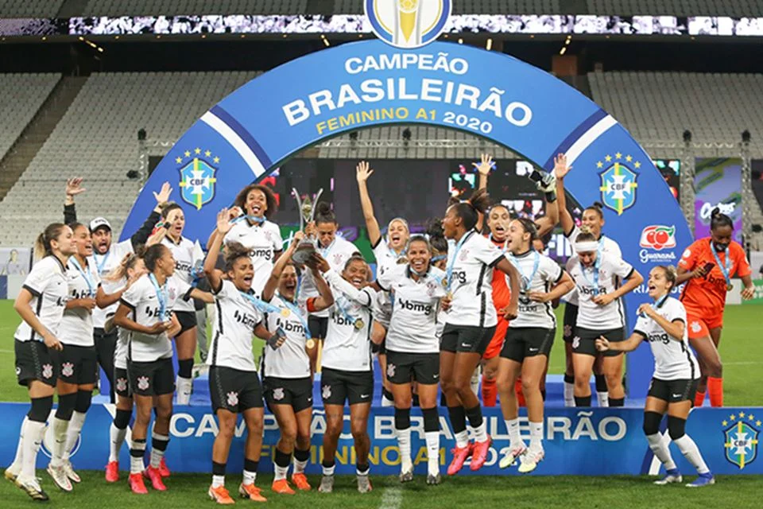

Time Feminino
O time feminino do Corinthians é um dos mais vitoriosos e reconhecidos do futebol feminino no Brasil. Fundado em 1997, mas oficialmente reestruturado em 2016, o time se destacou rapidamente como uma força dominante no cenário nacional e internacional.
Conquistas e Títulos
O Corinthians tem um histórico impressionante de conquistas. No Campeonato Brasileiro Feminino, o time venceu diversas vezes, com títulos em 2018, 2020, 2021, e 2022, entre outros. Além disso, o clube conquistou a Copa Libertadores da América Feminina várias vezes, incluindo vitórias em 2017, 2019, e 2021.
Estrutura e Apoio
O Corinthians investe significativamente em sua equipe feminina, oferecendo uma infraestrutura de ponta, com acesso ao mesmo centro de treinamento utilizado pelo time masculino. O clube também trabalha para promover a modalidade e buscar mais visibilidade e reconhecimento para o futebol feminino.
Impacto e Referências
O time feminino do Corinthians tem servido como uma referência para o crescimento do futebol feminino no Brasil, inspirando outras equipes a investirem mais na modalidade. Jogadoras como Andressinha, Gabi Zanotti, e Tamires se destacam não só no clube, mas também na seleção brasileira.
Base e Categorias de Formação
Além do time principal, o Corinthians também investe em categorias de base, visando desenvolver novas talentos para o futuro. A presença de uma base sólida ajuda a garantir a continuidade do sucesso e a manutenção de um alto nível de competitividade.
O Corinthians feminino, com sua combinação de talento, investimento e estrutura, continua a ser um exemplo de excelência no futebol feminino brasileiro.